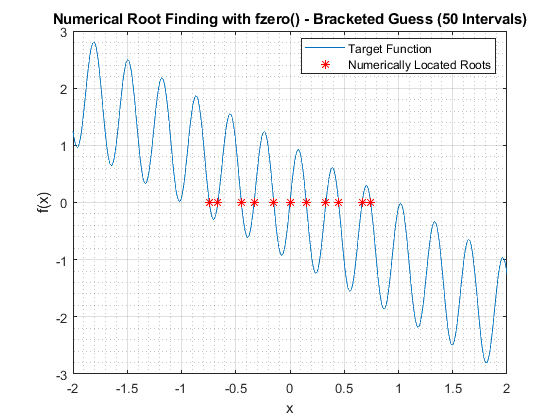

clc; clear; close all
TOL = 1e-6;
MAX = 2;
MIN = -2;
NUM_NODE = 51;
interval = (MAX - MIN)/(NUM_NODE - 1);
f_x = @(x) sin(20*x) - x;
node_series = linspace(MIN,MAX,NUM_NODE);
node_series(2:end-1) = node_series(2:end-1) + interval*0.01*(rand(1, NUM_NODE - 2) - 0.5);
f_series = f_x(node_series);
plot_x_series = linspace(MIN,MAX,1000);
plot_f_series = f_x(plot_x_series);
root_guess = NaN(NUM_NODE - 1,1);
for index = 1:(NUM_NODE - 1)
if f_series(index)*f_series(index+1) < 0
root_guess(index) = fzero(f_x, [node_series(index) node_series(index+1)]);
end
end
root_guess = root_guess(~isnan(root_guess))
figure;
plot(plot_x_series, plot_f_series, "DisplayName","Target Function"); hold on
plot(root_guess,zeros(length(root_guess),1),"r*", "DisplayName", "Numerically Located Roots");
title(sprintf("Numerical Root Finding with fzero() - Bracketed Guess (%d Intervals)",NUM_NODE -1));
xlabel("x");
ylabel("f(x)");
legend(Location="best");
grid on; grid minor;
root_guess =
-0.7435
-0.6647
-0.4480
-0.3310
-0.1496
-0.0000
0.1496
0.3310
0.4480
0.6647
0.7435
